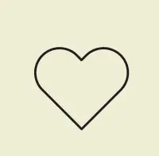
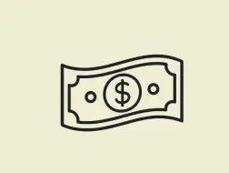
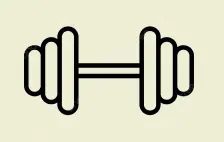

Gør en forskel
Med vores formular, kan du nemt skrive dig op som donor og gøre en forskel for andre.

Gør en forskel

Kompensation
Professionel støtte

Sundhedstjek
Her finder du svar på nogle af de mest almindelige spørgsmål om at blive donor.
Du skal opfylde en række sundheds- og alderskrav for at blive donor. Typisk skal du være sund og rask, have en stabil livsstil og leve op til klinikkens krav. Derudover gennemgår alle potentielle donorer en helbredsvurdering.
Du starter med at udfylde ansøgningsformularen på siden. Herefter bliver du kontaktet med information om de næste skridt. Hvis du går videre i processen, kan du blive inviteret til en samtale, screening og eventuelle helbredstjek.
Ja, donorer modtager ofte en økonomisk kompensation for den tid og indsats, de bruger i forbindelse med donationen. Den konkrete kompensation afhænger af donationstypen og klinikkens retningslinjer.
Selve ansøgningen tager kun få minutter at udfylde. Hvis du bliver godkendt som donor, kan processen dog strække sig over flere uger, da der ofte indgår samtaler, helbredstjek og eventuelle tests.
Det afhænger af typen af donation. Nogle donationer er anonyme, mens andre kan være åbne donationer, hvor barnet senere kan få adgang til visse oplysninger om donoren. Du vil blive informeret om mulighederne undervejs.
Ja, donorprocessen foregår under professionelle og kontrollerede forhold. Klinikker følger sundheds- og sikkerhedsprocedurer for at sikre, at donationen foregår så trygt og forsvarligt som muligt.
Ja, du kan altid vælge ikke at fortsætte processen, hvis du ændrer mening. Det er uforpligtende at sende en ansøgning, og du vil løbende blive informeret om de næste trin.
Når du har sendt din ansøgning, bliver dine oplysninger gennemgået, og du bliver kontaktet med næste skridt. Det kan være yderligere information, en samtale eller en invitation til screening.
Donation påvirker normalt ikke din egen fertilitet. Processen er planlagt til at foregå under trygge forhold og med fokus på donorens sundhed og velbefindende.
Det afhænger af gældende regler og klinikkens retningslinjer. Der vil ofte være grænser for, hvor mange gange man kan donere, både af hensyn til donorens sundhed og de overordnede rammer for donation.